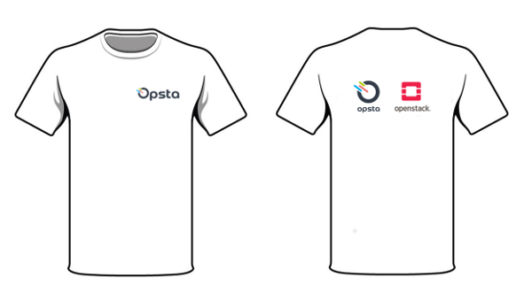

รายละเอียดคอร์ส
วันอบรม:
รอบที่ 1 วันพุธที่ 18 มกราคม 2560 - วันพฤหัสที่ 19 มกราคม 2560
รอบที่ 2 วันศุกร์ที่ 20 มกราคม 2560 - วันเสาร์ที่ 21 มกราคม 2560
เวลา:
9.30 - 17.30 น.
จำนวนผู้เข้าอบรม:
รอบละ 15 ท่าน
สถานที่:
Glowfish ตึกอโศกทาวเวอร์ ถนนอโศก อยู่ห่างจากสถานีรถไฟฟ้าใต้ดินเพชรบุรีเพียง 300 เมตร
แผนที่:
Google Maps
Google Street View
ราคา:
พิเศษเปิดคอร์สครั้งแรก! จากราคาปกติ 12,900 บาท ลดเหลือ 9,900 บาท
แต่ถ้าลงทะเบียนก่อนวันที่ 13 มกราคม 2560 (Early Bird) ลดเหลือ 7,900 บาทเท่านั้น! (ราคารวม VAT แล้ว)
คอร์สนี้เหมาะสำหรับ:
- IT Managers หรือ System Engineers ที่กำลังมองหา solution private cloud สำหรับองค์กร
- บุคคลทั่วไปที่สนใจและต้องการศึกษา OpenStack ตั้งแต่ระดับเบื้องต้น
สิ่งที่ต้องเตรียมสำหรับผู้เข้าอบรม
- มีความรู้พื้นฐาน Linux command line
- มีความรู้พื้นฐานทางด้าน Network เช่น TCP/IP, VLAN
- คอมพิวเตอร์ส่วนตัวที่ติดตั้ง Browser และ SSH Client เช่น Terminal หรือ Putty
สิ่งที่ผู้เข้าอบรมจะได้จากคอร์สนี้:
- ได้รู้จัก เรียนรู้ และลองใช้งานตัวระบบพื้นฐานของ OpenStack อันได้แก่ Nova, Keystone, Neutron, Cinder, Glance, Swift และ Horizon
- ได้ลองติดตั้ง All-in-one OpenStack ด้วย OpenStack Ansible (OSA) เพื่อใช้สำหรับการทดลองแล็ปหรือ PoC ในองค์กร
- ได้เรียนรู้ best practice ในการวางแผนอุปกรณ์ เซิร์ฟเวอร์ เน็ตเวิร์ก ในการสร้างระบบ OpenStack ในการใช้งานจริง
- เรียนรู้การใช้งาน OpenStack CLI และ Heat เพื่อสร้างระบบแบบ automation
- อาหารว่างเช้า บ่าย และอาหารกลางวัน ตลอดเวลา 2 วันการอบรม
- เสื้อที่ระลึกจากการอบรม
